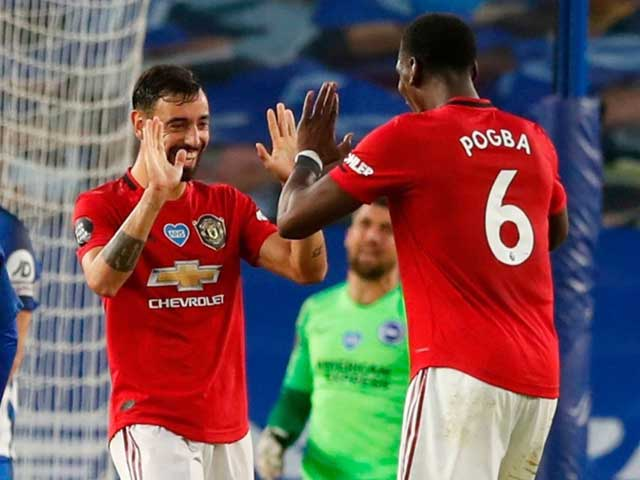
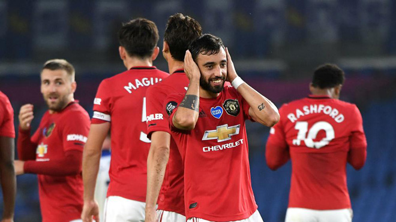

Bruno Fernandes thừa nhận không công bằng khi so anh với Pogba
Ngôi sao đã lập cú đúp cho MU trong chiến thắng 3-0 trên sân Brighton là Bruno Fernandes vừa lên tiếng khẳng định anh không muốn nói nhiều về khả năng kết hợp với Paul Pogba. Tiền vệ người Bồ Đào Nha thừa nhận Pogba là một đối tác "tuyệt vời" và cho thấy sự hài lòng của anh về người đồng đội. Tuy nhiên, cầu thủ đến MU hồi mùa đông năm nay đã nhấn mạnh việc không nên đề cao vai trò của anh trong đội bóng.
Hình ảnh Bruno và Pogba ăn mừng chiến thắng
Chia sẻ với SkySports khi được hỏi về việc đá cặp với Pogba trên hàng tiền vệ, Fernandes thừa nhận: "Tất nhiên Paul (Pogba) là một cầu thủ tuyệt vời, nhưng tôi không muốn nói quá nhiều về tôi và anh ấy. Thật không công bằng khi so sánh tôi và Pogba bởi điều đó hạ thấp nỗ lực của các đồng đội còn lại. Tôi và Pogba có những điểm tương đồng nên có thể kết hợp tốt với nhau. Tuy nhiên, tôi cũng hạnh phúc khi được chơi bên cạnh những đồng đội khác".

Ngôi sao người Bồ Đào Nha khẳng định không muốn là tâm điểm của báo chí
"Thật không công bằng cho những cầu thủ khác nếu mọi người chỉ toàn nhắc đến tôi và Pogba. Fred
và McTominay đã chơi ấn tượng trước khi giải đấu bị hoãn, còn Matic là một máy quét tuyệt vời.
Ngoài ra, Andreas (Pereira) và Jesse (Lingard) cũng có thể đá ở vị trí số 10, trong khi Mata đã
cống hiến rất nhiều cho đội bóng. Chúng tôi là một đội bóng, một tập thể ăn tập cùng nhau. Các
cầu thủ cùng thúc đẩy tôi hay Pogba chơi tốt hơn nên đây thực sự là một tập thể đồng đều" -
Bruno Fernandes khẳng định.
Fernandes được Pogba “dọn cỗ”, lập kỳ tích
Trước đối thủ yếu Brighton, Fernandes một lần nữa được chơi cùng Pogba ở tuyến giữa MU. Tiền vệ người Bồ Đào Nha tiếp tục cho thấy giá trị bằng việc tham gia xây dựng lối chơi của “Quỷ đỏ”, cùng với đó là những đóng góp rất thiết thực.